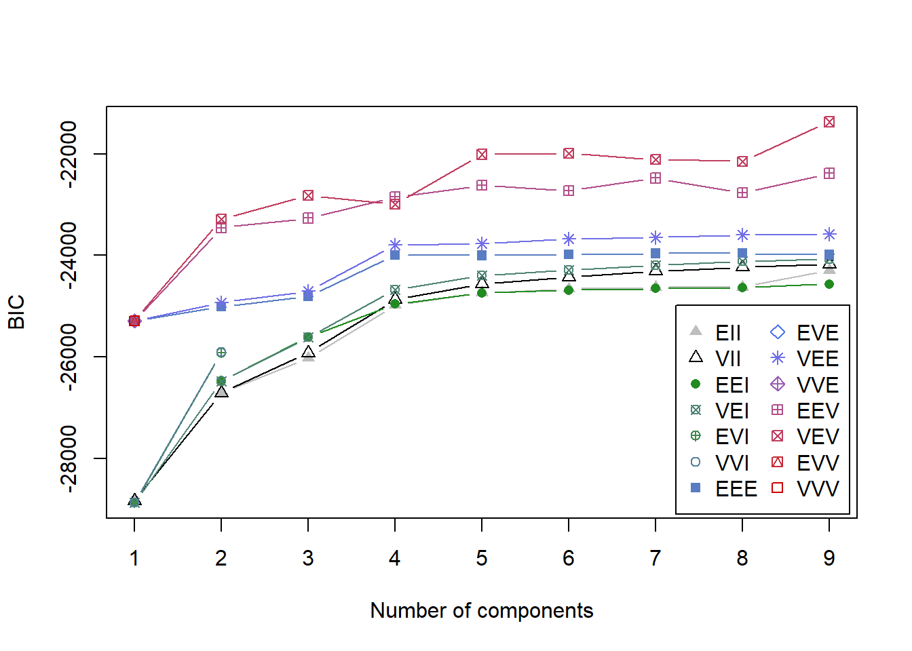
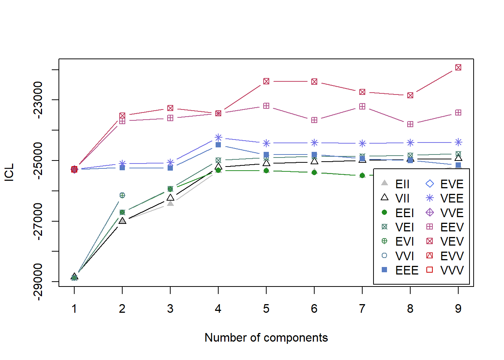
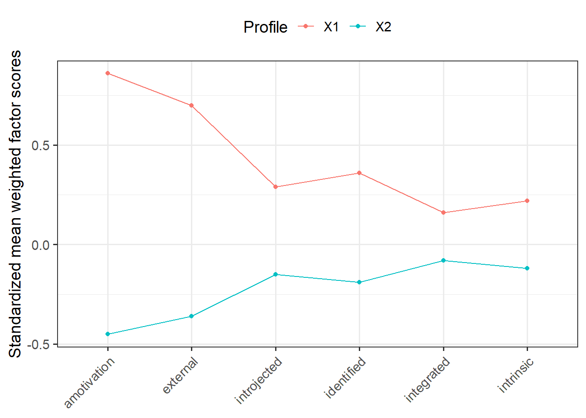
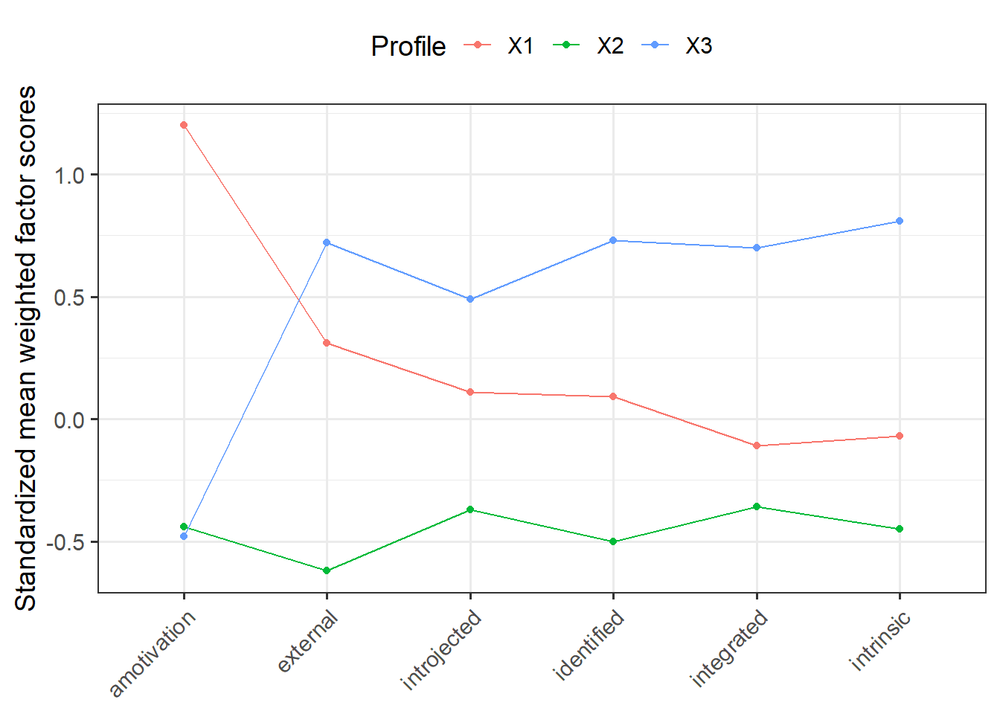
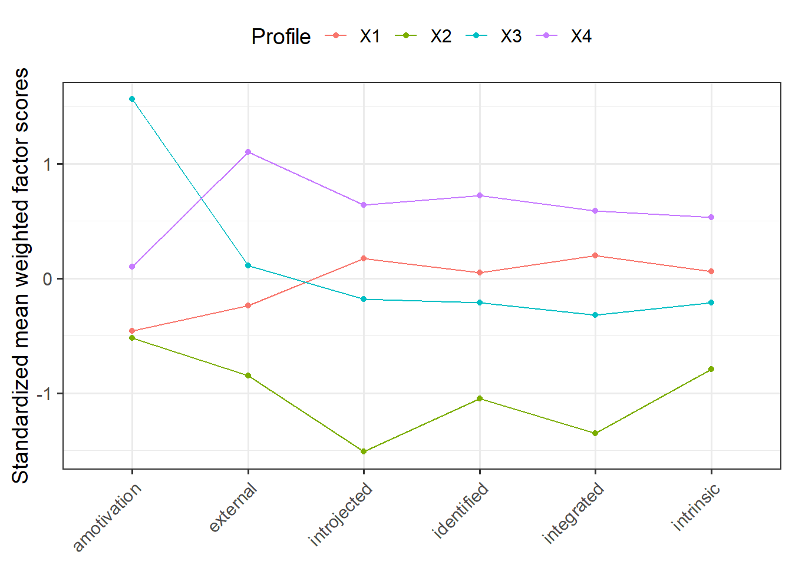
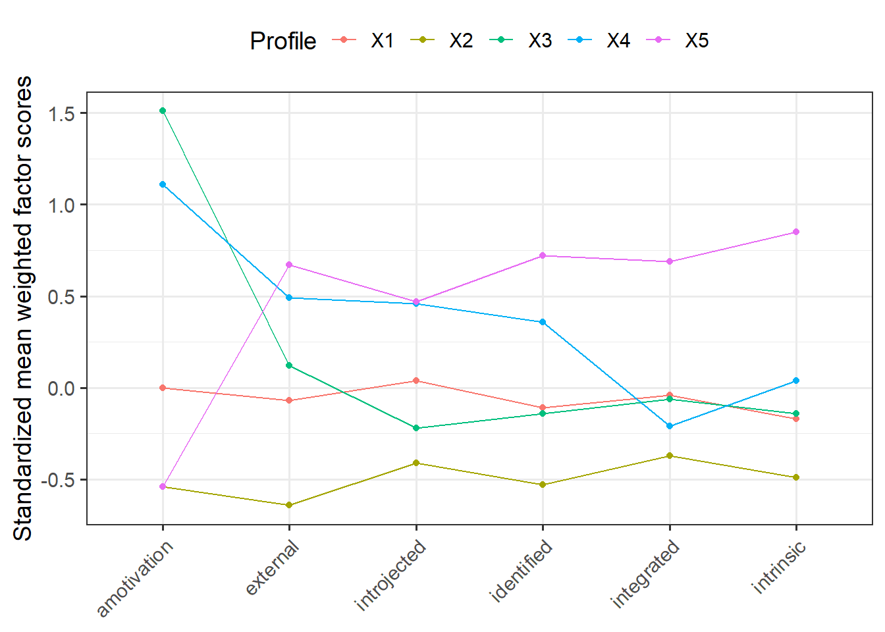
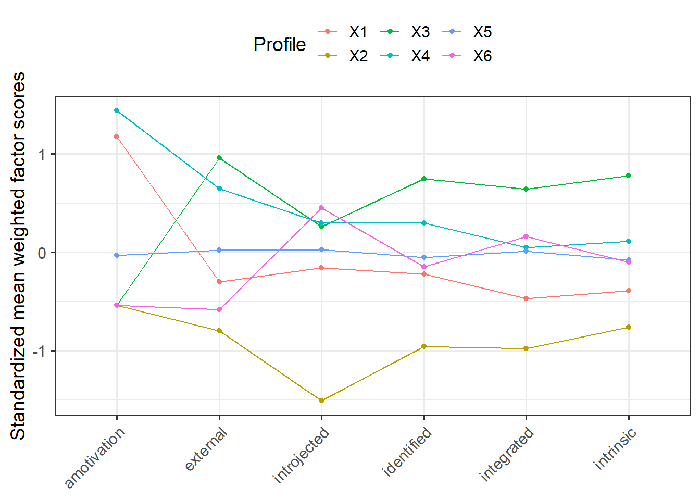

Step 1
Through step 1 we identified the motivational profiles for each timepoint, using data from all 3 time points (and thus assuming the observations of each time point to be independent from others).
1. Data
Let’s get our ‘cleaned’ SMS-data, for each wave, and then bind them together (and thus assume them to be independent observations)
library(sjlabelled)
library(dplyr)
library(tidyverse)
library(careless)
library(psych)
load("data_abs_public_v2.RData") # load data
data_abs_public <- unlabel(data_abs_public, verbose=F)
# subset sms data in each wave
sms_w1 <- data_abs_public %>% select(W1_M1_1, W1_M1_2, W1_M1_3, W1_M1_4, W1_M1_5, W1_M1_6, W1_M1_7, W1_M1_8, W1_M2_1, W1_M2_2, W1_M2_3, W1_M2_4, W1_M2_5, W1_M2_6, W1_M2_7, W1_M2_8, W1_M3_1, W1_M3_2, W1_M3_3, W1_M3_4, W1_M3_5, W1_M3_6, W1_M3_7, W1_M3_8)
sms_w2 <- data_abs_public %>% select(W2_M1_1, W2_M1_2, W2_M1_3, W2_M1_4, W2_M1_5, W2_M1_6, W2_M1_7, W2_M1_8, W2_M2_1, W2_M2_2, W2_M2_3, W2_M2_4, W2_M2_5, W2_M2_6, W2_M2_7, W2_M2_8, W2_M3_1, W2_M3_2, W2_M3_3, W2_M3_4, W2_M3_5, W2_M3_6, W2_M3_7, W2_M3_8)
sms_w3 <- data_abs_public %>% select(W3_M1_1, W3_M1_2, W3_M1_3, W3_M1_4, W3_M1_5, W3_M1_6, W3_M1_7, W3_M1_8, W3_M2_1, W3_M2_2, W3_M2_3, W3_M2_4, W3_M2_5, W3_M2_6, W3_M2_7, W3_M2_8, W3_M3_1, W3_M3_2, W3_M3_3, W3_M3_4, W3_M3_5, W3_M3_6, W3_M3_7, W3_M3_8)
# make a 'string' variable
sms_w1 <- sms_w1 %>%
mutate(string_w1 = longstring(.)) %>%
mutate(md_w1 = outlier(., plot = FALSE))
sms_w2 <- sms_w2 %>%
mutate(string_w2 = longstring(.)) %>%
mutate(md_w2 = outlier(., plot = FALSE))
sms_w3 <- sms_w3 %>%
mutate(string_w3 = longstring(.)) %>%
mutate(md_w3 = outlier(., plot = FALSE))
# cap string responding and use MD
cutoff_w1 <- (qchisq(p = 1 - .001, df = ncol(sms_w1)))
sms_w1 <- sms_w1 %>%
filter(string_w1 <= 10,
md_w1 < cutoff_w1) %>%
select(-string_w1, -md_w1)
cutoff_w2 <- (qchisq(p = 1 - .001, df = ncol(sms_w2)))
sms_w2 <- sms_w2 %>%
filter(string_w2 <= 10,
md_w2 < cutoff_w2) %>%
select(-string_w2, -md_w2)
cutoff_w3 <- (qchisq(p = 1 - .001, df = ncol(sms_w3)))
sms_w3 <- sms_w3 %>%
filter(string_w3 <= 10,
md_w3 < cutoff_w3) %>%
select(-string_w3, -md_w3)
# bind together (hence assuming independent observations)
names(sms_w1) <- names(sms_w2) <- names(sms_w3) <- c("M1_1", "M1_2", "M1_3", "M1_4", "M1_5", "M1_6", "M1_7", "M1_8", "M2_1", "M2_2", "M2_3", "M2_4", "M2_5", "M2_6", "M2_7", "M2_8", "M3_1", "M3_2", "M3_3", "M3_4", "M3_5", "M3_6", "M3_7", "M3_8")
sms <- rbind(sms_w1, sms_w2, sms_w3)
sms$id <- 1:nrow(sms) # add identifier
2. CFA
Tell Lavaan the confirmatory structure.
library(lavaan)
motivation_model <- "
amotivation =~ M1_5 + M2_4 + M3_1 + M3_6
external =~ M1_4 + M2_3 + M3_3 + M3_8
introjected =~ M1_7 + M2_2 + M2_8 + M3_7
identified =~ M1_3 + M1_8 + M2_7 + M3_4
integrated =~ M1_2 + M2_1 + M2_5 + M3_5
intrinsic =~ M1_1 + M1_6 + M2_6 + M3_2
id ~~ id"
Now let’s have a look at different fit indices.
fit <- cfa(motivation_model, data=sms,
std.lv=FALSE) # this may be left out as well
print(fitMeasures(fit, c("chisq", "df", "pvalue", "cfi", "rmsea", "srmr"), output = "text"), add.h0 = TRUE)
##
## Model Test User Model:
##
## Test statistic 2541.959
## Degrees of freedom 261
## P-value 0.000
##
## User Model versus Baseline Model:
##
## Comparative Fit Index (CFI) 0.863
##
## Root Mean Square Error of Approximation:
##
## RMSEA 0.072
##
## Standardized Root Mean Square Residual:
##
## SRMR 0.058
And get the factor scores (we fixed the loading of the first variable of each latent variable to 1). We calculate weighted factor scores for each motivational subscale by multiplying the factor loading of each item to the scaled score for each item before summing.
loading <- parameterEstimates(fit) # get loadings
loading <- loading$est[1:24] # subset
# weighted sum (factor) scores
amotivation <- rowMeans(cbind((sms$M1_5*loading[1]), (sms$M2_4*loading[2]), (sms$M3_1*loading[3]), (sms$M3_6*loading[4])))
external <- rowMeans(cbind((sms$M1_4*loading[5]), (sms$M2_3*loading[6]), (sms$M3_3*loading[7]), (sms$M3_8*loading[8])))
introjected <- rowMeans(cbind((sms$M1_7*loading[9]), (sms$M2_2*loading[10]), (sms$M2_8*loading[11]), (sms$M3_7*loading[12])))
identified <- rowMeans(cbind((sms$M1_3*loading[13]), (sms$M1_8*loading[14]), (sms$M2_7*loading[15]), (sms$M3_4*loading[16])))
integrated <- rowMeans(cbind((sms$M1_2*loading[17]), (sms$M2_1*loading[18]), (sms$M2_5*loading[19]), (sms$M3_5*loading[20])))
intrinsic <- rowMeans(cbind((sms$M1_1*loading[21]), (sms$M1_6*loading[22]), (sms$M2_6*loading[23]), (sms$M3_2*loading[24])))
# make df with complete observations (listwise deletion)
weighted <- cbind(amotivation, external, introjected, identified, integrated, intrinsic)
weighted <- as.data.frame(weighted[complete.cases(weighted), ])
3. Descriptives
Let’s get some descriptive statistics.
library(dplyr)
library(tidyr)
library(knitr)
library(kableExtra)
input <- weighted %>%
gather("Variable", "value") %>%
group_by(Variable) %>%
summarise(Mean=mean(value, na.rm=TRUE),
SD=sd(value, na.rm=TRUE),
min=min(value, na.rm=TRUE),
max=max(value, na.rm=TRUE))
knitr::kable(input, digits=2, "html", caption="Descriptives of SMS (aggregated): weighted sum scores") %>%
kableExtra::kable_styling(bootstrap_options = c("striped", "hover"))
Descriptives of SMS (aggregated): weighted sum scores
|
Variable
|
Mean
|
SD
|
min
|
max
|
|
amotivation
|
1.57
|
0.71
|
1.19
|
5.91
|
|
external
|
2.22
|
1.13
|
0.98
|
6.13
|
|
identified
|
3.23
|
1.15
|
0.94
|
6.56
|
|
integrated
|
5.47
|
1.71
|
1.25
|
8.73
|
|
intrinsic
|
4.84
|
1.75
|
1.26
|
8.83
|
|
introjected
|
6.44
|
1.65
|
1.54
|
9.01
|
At face value, respondents seem to be pretty high in all types of motivation (compare with the sample of Emm-Collison and colleagues).
4. LPA
Now we use the aggregated SMS data to identify motivational profiles, in a sequence of models with an increasing number of profiles (from 2 to …), to ascertain whether more complex (i.e. more profiles) or parsimonious (i.e. fewer profiles) models provided the best description (fit) of the data. We use the BIC and ICL (which penalizes on entropy) to see which model provides the best statistical fit to the data. But first, we transform the SMS-data into standardized z-scores, meaning that profile means reflect standard deviation (SD) units above or below the sample mean (which is set to 0).
clus <- weighted %>%
na.omit() %>% # listwise deletion
mutate_all(list(scale)) # standardize indicators
BIC
library(mclust)
BIC <- mclustBIC(clus)
plot(BIC)

ICL
library(mclust)
ICL <- mclustICL(clus)
plot(ICL)

Use the summary-function to show the top-three models based on BIC and ICL. (Oh and btw, here is a link that explains why Mclust defaults to the model with the highest BIC value as the “best” model).
BIC
summary(BIC)
## Best BIC values:
## VEV,9 VEV,6 VEV,5
## BIC -21370.12 -21993.3819 -22011.483
## BIC diff 0.00 -623.2571 -641.358
ICL
summary(ICL)
## Best ICL values:
## VEV,9 VEV,5 VEV,6
## ICL -21924.32 -22381.6310 -22393.724
## ICL diff 0.00 -457.3104 -469.403
5. Visualize
VEV, 9 provided the best-fitting model (followed by 6 and 5). Let’s estimate a sequence of models, with an increasing number of profiles, and plot them to assess their theoretical alignment.
2 profiles
m2 <- Mclust(clus, modelNames = "VEV", G = 2, x = BIC)
summary(m2)
## ----------------------------------------------------
## Gaussian finite mixture model fitted by EM algorithm
## ----------------------------------------------------
##
## Mclust VEV (ellipsoidal, equal shape) model with 2 components:
##
## log-likelihood n df BIC ICL
## -11460.28 1691 50 -23292.21 -23517.14
##
## Clustering table:
## 1 2
## 543 1148
# Extract mean weighted factor scores
library(reshape2)
means <- data.frame(m2$parameters$mean,
stringsAsFactors = F) %>%
rownames_to_column() %>%
rename(Motivation = rowname) %>%
melt(id.vars = "Motivation", variable.name = "Profile", value.name = "Mean") %>%
mutate(Mean = round(Mean, 2))
# Plot
means %>%
ggplot(aes(Motivation, Mean, group = Profile, color = Profile)) +
geom_line() +
geom_point() +
scale_x_discrete(limits = c("amotivation", "external", "introjected", "identified", "integrated", "intrinsic")) +
labs(x = NULL, y = "Standardized mean weighted factor scores") +
theme_bw(base_size = 14) +
theme(axis.text.x = element_text(angle = 45, hjust = 1), legend.position = "top")

3 profiles
m3 <- Mclust(clus, modelNames = "VEV", G = 3, x = BIC)
summary(m3)
## ----------------------------------------------------
## Gaussian finite mixture model fitted by EM algorithm
## ----------------------------------------------------
##
## Mclust VEV (ellipsoidal, equal shape) model with 3 components:
##
## log-likelihood n df BIC ICL
## -11139.75 1691 73 -22822.1 -23271.44
##
## Clustering table:
## 1 2 3
## 428 799 464
# Extract mean weighted sum scores
library(reshape2)
means <- data.frame(m3$parameters$mean,
stringsAsFactors = F) %>%
rownames_to_column() %>%
rename(Motivation = rowname) %>%
melt(id.vars = "Motivation", variable.name = "Profile", value.name = "Mean") %>%
mutate(Mean = round(Mean, 2))
# Plot
means %>%
ggplot(aes(Motivation, Mean, group = Profile, color = Profile)) +
geom_line() +
geom_point() +
scale_x_discrete(limits = c("amotivation", "external", "introjected", "identified", "integrated", "intrinsic")) +
labs(x = NULL, y = "Standardized mean weighted factor scores") +
theme_bw(base_size = 14) +
theme(axis.text.x = element_text(angle = 45, hjust = 1), legend.position = "top")

4 profiles
m4 <- Mclust(clus, modelNames = "VEV", G = 4, x = BIC)
summary(m4)
## ----------------------------------------------------
## Gaussian finite mixture model fitted by EM algorithm
## ----------------------------------------------------
##
## Mclust VEV (ellipsoidal, equal shape) model with 4 components:
##
## log-likelihood n df BIC ICL
## -11139.43 1691 96 -22992.44 -23440.25
##
## Clustering table:
## 1 2 3 4
## 915 196 276 304
# Extract mean weighted sum scores
library(reshape2)
means <- data.frame(m4$parameters$mean,
stringsAsFactors = F) %>%
rownames_to_column() %>%
rename(Motivation = rowname) %>%
melt(id.vars = "Motivation", variable.name = "Profile", value.name = "Mean") %>%
mutate(Mean = round(Mean, 2))
# Plot
means %>%
ggplot(aes(Motivation, Mean, group = Profile, color = Profile)) +
geom_line() +
geom_point() +
scale_x_discrete(limits = c("amotivation", "external", "introjected", "identified", "integrated", "intrinsic")) +
labs(x = NULL, y = "Standardized mean weighted factor scores") +
theme_bw(base_size = 14) +
theme(axis.text.x = element_text(angle = 45, hjust = 1), legend.position = "top")

5 profiles
m5 <- Mclust(clus, modelNames = "VEV", G = 5, x = BIC)
summary(m5)
## ----------------------------------------------------
## Gaussian finite mixture model fitted by EM algorithm
## ----------------------------------------------------
##
## Mclust VEV (ellipsoidal, equal shape) model with 5 components:
##
## log-likelihood n df BIC ICL
## -10563.47 1691 119 -22011.48 -22381.63
##
## Clustering table:
## 1 2 3 4 5
## 229 649 207 192 414
# Extract mean weighted sum scores
library(reshape2)
means <- data.frame(m5$parameters$mean,
stringsAsFactors = F) %>%
rownames_to_column() %>%
rename(Motivation = rowname) %>%
melt(id.vars = "Motivation", variable.name = "Profile", value.name = "Mean") %>%
mutate(Mean = round(Mean, 2))
# Plot
means %>%
ggplot(aes(Motivation, Mean, group = Profile, color = Profile)) +
geom_line() +
geom_point() +
scale_x_discrete(limits = c("amotivation", "external", "introjected", "identified", "integrated", "intrinsic")) +
labs(x = NULL, y = "Standardized mean weighted factor scores") +
theme_bw(base_size = 14) +
theme(axis.text.x = element_text(angle = 45, hjust = 1), legend.position = "top")

6 profiles
m6 <- Mclust(clus, modelNames = "VEV", G = 6, x = BIC)
summary(m6)
## ----------------------------------------------------
## Gaussian finite mixture model fitted by EM algorithm
## ----------------------------------------------------
##
## Mclust VEV (ellipsoidal, equal shape) model with 6 components:
##
## log-likelihood n df BIC ICL
## -10468.94 1691 142 -21993.38 -22393.72
##
## Clustering table:
## 1 2 3 4 5 6
## 173 234 351 229 225 479
# Extract mean weighted sum scores
library(reshape2)
means <- data.frame(m6$parameters$mean,
stringsAsFactors = F) %>%
rownames_to_column() %>%
rename(Motivation = rowname) %>%
melt(id.vars = "Motivation", variable.name = "Profile", value.name = "Mean") %>%
mutate(Mean = round(Mean, 2))
# Plot
means %>%
ggplot(aes(Motivation, Mean, group = Profile, color = Profile)) +
geom_line() +
geom_point() +
scale_x_discrete(limits = c("amotivation", "external", "introjected", "identified", "integrated", "intrinsic")) +
labs(x = NULL, y = "Standardized mean weighted factor scores") +
theme_bw(base_size = 14) +
theme(axis.text.x = element_text(angle = 45, hjust = 1), legend.position = "top")

6. Probabilities
Now let’s check the class membership probabilities (posterior probabilities) of our models.
Note to self: also check entropy.
2 profiles
prob <- as.data.frame(m2$z) # turn probabilities into dataframe
prob$class <- m2$classification # get assigned profiles
c1 <- prob %>% # calculate average posterior probabilities
filter(class == 1)
c2 <- prob %>%
filter(class == 2)
pp <- as.data.frame(rbind(colMeans(c1), colMeans(c2)))
print(pp)
## V1 V2 class
## 1 0.94446534 0.05553466 1
## 2 0.05771503 0.94228497 2
3 profiles
prob <- as.data.frame(m3$z) # turn probabilities into dataframe
prob$class <- m3$classification # get assigned profiles
c1 <- prob %>% # calculate average posterior probabilities
filter(class == 1)
c2 <- prob %>%
filter(class == 2)
c3 <- prob %>%
filter(class == 3)
pp <- as.data.frame(rbind(colMeans(c1), colMeans(c2), colMeans(c3)))
print(pp)
## V1 V2 V3 class
## 1 0.96052034 0.02440954 0.01507012 1
## 2 0.03539221 0.88247289 0.08213490 2
## 3 0.06237198 0.10126204 0.83636598 3
4 profiles
prob <- as.data.frame(m4$z) # turn probabilities into dataframe
prob$class <- m4$classification # get assigned profiles
c1 <- prob %>% # calculate average posterior probabilities
filter(class == 1)
c2 <- prob %>%
filter(class == 2)
c3 <- prob %>%
filter(class == 3)
c4 <- prob %>%
filter(class == 4)
pp <- as.data.frame(rbind(colMeans(c1), colMeans(c2), colMeans(c3), colMeans(c4)))
print(pp)
## V1 V2 V3 V4 class
## 1 0.90395729 2.949224e-02 0.02393010 0.042620372 1
## 2 0.13351293 8.506005e-01 0.01574430 0.000142279 2
## 3 0.01738086 3.619163e-03 0.92368246 0.055317517 3
## 4 0.08132547 1.646916e-07 0.07803924 0.840635123 4
5 profiles
prob <- as.data.frame(m5$z) # turn probabilities into dataframe
prob$class <- m5$classification # get assigned profiles
c1 <- prob %>% # calculate average posterior probabilities
filter(class == 1)
c2 <- prob %>%
filter(class == 2)
c3 <- prob %>%
filter(class == 3)
c4 <- prob %>%
filter(class == 4)
c5 <- prob %>%
filter(class == 5)
pp <- as.data.frame(rbind(colMeans(c1), colMeans(c2), colMeans(c3), colMeans(c4), colMeans(c5)))
print(pp)
## V1 V2 V3 V4 V5 class
## 1 0.8755549668 1.294532e-03 0.051276312 0.071791790 8.239883e-05 1
## 2 0.0002500483 9.054028e-01 0.005235859 0.004255844 8.485545e-02 2
## 3 0.0161256405 8.061951e-04 0.952049335 0.029551970 1.466860e-03 3
## 4 0.0253577898 3.455736e-08 0.029525977 0.939219074 5.897125e-03 4
## 5 0.0001228048 9.276796e-02 0.004988436 0.009255939 8.928649e-01 5
6 profiles
prob <- as.data.frame(m6$z) # turn probabilities into dataframe
prob$class <- m6$classification # get assigned profiles
c1 <- prob %>% # calculate average posterior probabilities
filter(class == 1)
c2 <- prob %>%
filter(class == 2)
c3 <- prob %>%
filter(class == 3)
c4 <- prob %>%
filter(class == 4)
c5 <- prob %>%
filter(class == 5)
c6 <- prob %>%
filter(class == 6)
pp <- as.data.frame(rbind(colMeans(c1), colMeans(c2), colMeans(c3), colMeans(c4), colMeans(c5), colMeans(c6)))
print(pp)
## V1 V2 V3 V4 V5 V6
## 1 0.853476654 3.887042e-05 2.610239e-03 0.135119960 6.974933e-03 1.779343e-03
## 2 0.004251414 9.124043e-01 2.466190e-02 0.002117921 1.579629e-06 5.656293e-02
## 3 0.004741431 1.531379e-02 9.198334e-01 0.011593803 2.699375e-06 4.851487e-02
## 4 0.068595716 1.848554e-05 1.550294e-04 0.912238636 1.899212e-02 8.223593e-09
## 5 0.051733230 4.267858e-05 6.227042e-05 0.049868990 8.982061e-01 8.673234e-05
## 6 0.003920284 3.348284e-02 6.461552e-02 0.003039402 3.333220e-06 8.949386e-01
## class
## 1 1
## 2 2
## 3 3
## 4 4
## 5 5
## 6 6
7. Validation
Based on statistical fit (BIC, ICL), membership probabilities, and theoretical appropriateness, we chose the 5-class solution. To ensure that interpretation is theoretically meaningful and appropriate, we have re-ordened the profiles to match the motivational continuum proposed from SDT. The six profiles are labelled as:
- Strongly amotivated: primarily amotivation with some (read: average levels of) other forms of motivational regulation.
- Amotivated: primarily amotivation, but also high levels of external and introjected regulation.
- Low in motivation: low levels of all types of behavioral regulation.
- Moderate in motivation: about average on all forms of behavioral regulation.
- High in motivation: high in autonomous forms of motivation (i.e. intrinsic, integrated, identified), and also in controlled forms (i.e. external, introjected), but low in amotivation.
Note that we concluded earlier that, on average, our sample scored relatively high on all forms of behavioral regulation. Therefore, a profile such as ‘Amotivated’ must be understood in the context of these average scores.
Let’s describe our final model more neatly, and make it interactive.
# Trimming values exceeding +1 SD
means <- data.frame(m5$parameters$mean,
stringsAsFactors = F) %>%
rownames_to_column() %>%
rename(Motivation = rowname) %>%
melt(id.vars = "Motivation", variable.name = "Profile", value.name = "Mean") %>%
mutate(Mean = round(Mean, 2),
Mean = ifelse(Mean > 1, 1, Mean))
# Change labels
means$Profile <- plyr::revalue(means$Profile,
c("X1"="Moderate in motivation", "X2" = "Low in motivation", "X3" = "Strongly amotivated", "X4" = "Amotivated", "X5" = "High in motivation"))
means$Motivation <- plyr::revalue(means$Motivation, c("amotivation" = "Amotivation", "external" = "External", "introjected" = "Introjected", "identified" = "Identified", "integrated" = "Integrated","intrinsic" = "Intrinsic"))
# Change order
means$Profile <- factor(means$Profile, # Relevel group factor
levels = c("Strongly amotivated", "Amotivated", "Low in motivation", "Moderate in motivation", "High in motivation" ))
p <- means %>%
ggplot(aes(Motivation, Mean, group = Profile, color = Profile)) +
geom_point(size = 2) +
geom_line(size = 1) +
scale_x_discrete(limits = c("Amotivation", "External", "Introjected", "Identified", "Integrated", "Intrinsic")) +
labs(x = NULL, y = "Standardized mean weighted factor scores") +
scale_colour_manual(values=c("#000000", "#E69F00", "#56B4E9", "#009E73", "#F0E442")) + theme_bw(base_family="serif", base_size = 16) + geom_hline(yintercept = 0, linetype="dashed") + theme(axis.text.x = element_text(family="serif", angle = 45, hjust = 1), legend.position = "right", legend.title=element_blank())
#png((paste("images", "/", "lpa.png", sep = ""))) # save the plot as .png, in case we need it...
library(plotly)
ggplotly(p, tooltip = c("Motivation", "Mean")) %>%
layout(legend = list(orientation = "h", y = 4))
To-do: explore assumptions about variance, by comparing the VEV,5 model with models with correlated indicators, and equal variances across time (see this paper).
